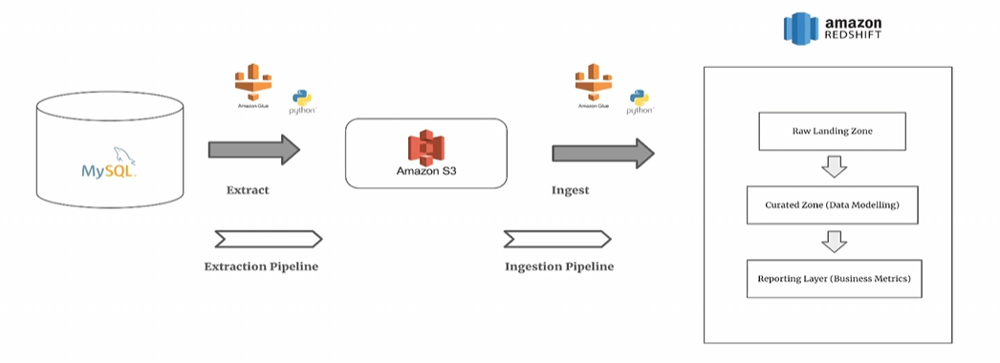

← Back to Projects
ETL Data Processing of Rental Apartments Using Glue, Redshift, and Step Functions
Introduction
This project outlines an ETL data pipeline for rental apartments, leveraging AWS services to process large-scale housing data for analytics and market trends.
Workflow Overview
- Extracting property rental data from AWS Aurora (MySQL).
- Storing extracted data in Amazon S3.
- Loading raw data into Amazon Redshift for batch processing.
- Transforming datasets using AWS Glue jobs.
- Orchestrating workflow using AWS Step Functions.
- Running business analytics using Amazon Redshift.

Step Functions for Workflow Automation
AWS Step Functions automate ETL execution by triggering AWS Glue jobs, coordinating data flow, and ensuring the pipeline runs efficiently.
Technologies Used
- Amazon S3 - Data lake
- AWS Glue - Data transformation
- Amazon Redshift - Data warehousing
- AWS Step Functions - Workflow automation
- AWS Aurora (MySQL) - Data source
Conclusion
This ETL solution enables efficient housing data analytics. Future enhancements include AWS Lambda for event-driven ingestion and ML models for predictive rent pricing.